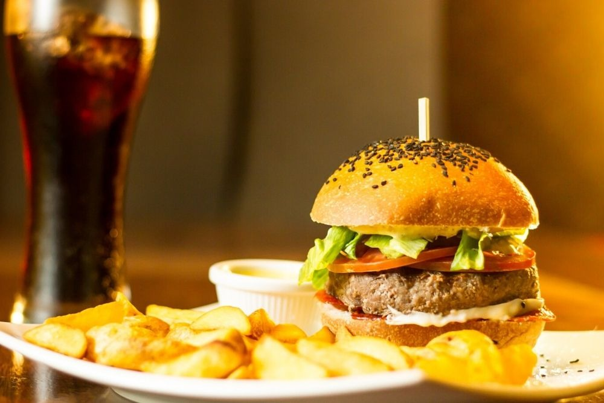

BANKING & ATM FACILITIES
A branch of Bank of Ceylon (BOC) and Hatton National Bank (HNB) with the ATM facility is located inside the hospital premises.
- Foreign currency exchange
- Opening of Savings, Current, Fixed and NRFC accounts
- Cash &Cheque deposits and cash withdrawal
- Loan facilities (only for LH staff)
- Pawning
- ATM facility
Bank of Ceylon (BOC)
Location
Bank of Ceylon (BOC) – Ground floor – at the service building, close to the café.
Bank of Ceylon (BOC) – ATM – Ground floor – at the right hand side of the cafe
Working Hours
Week days – 8.30 am to 3pm
Contact Number
+9411 543 9077
+94 11 2369535
Hatton National Bank (HNB)
Location
Hatton National Bank (HNB) – Ground Floor – in front of the Pharmacy
Hatton National Bank (HNB) ATM – Ground Floor – in front of the Pharmacy
Working Hours
Week days – 9.00 am to 4.30pm
Contact Number
Tel – +9411 2368433
Fax- +94 11 2369433
Email – lanka.hospitals@hnb.lk
PRAYER ROOM
At Lanka Hospital, we believe that healing and spirituality are intertwined, thus we provide a dedicated oasis for our patients and visitors to use while at the hospital. The prayer center is conveniently located in the 2nd floor and is open throughout the day.

FOOD & BEVERAGES
Our meals prove that hospital food can in fact be tantalizing. All our meals are carefully prepared in a modern kitchen with only the freshest ingredients. Selected menu items are on offer between 10pm and 6am and a la carte meals are available to order at any time of the day. Food safety is one of our key concerns. We employ a food safety management system to ensure that our meals exceed in standards of taste and nutrition but also in terms of hygiene. Our state-of-art industrial kitchen is ISO 22000:2005 certified which means you are assured of food safety in every meal. We have been designated 5 out of 5 Crowns and rated excellent in meeting international standards in food quality and hygiene.
Contact Details
011 5439072

CAFÉ
Visitors of our hospital have the convenience of the Touching Taste Café which services meals from 7am to 10pm. The café has open air seating and offers a variety of delectable meals. Maldivian food is also available at the café specially made for our Maldivian clients.

CHANNELING SERVICES
We offer highest standards of clinical skills and nursing care across wide range of specialties, with leading specialist doctors and surgeons along with spacious consultation rooms that meet international standards

ROOM FACILITIES
When you or a loved one are in a hospital environment, the special touches can make all the difference to your mood and healing. To add to the comfort of your stay, we can arrange little extras such as daily newspapers, magazines and any special dietary requirements. And, of course, your visitors are welcome at any time, as soon as you are ready to receive them. If you or they have travelled from abroad, then please ask us for information about local accommodation and translation services.
We are geared to cater to the needs of everyone who visits the hospital. While room facilities may vary, one thing is constant. All patients are under constant care and attention of fully trained and qualified nursing staff who have years of training in each area of medical specialisation. Our nurses are just the touch of a button away, round-the-clock they will be at your bedside, through our remote summoning device. Our in-patients receive 24-hour supervision of resident medical officers and are also under the constant care of ward and resident doctors
As the name suggests, the Royal Suite comes with the luxuries of royalty. It is fully served with air-conditioning, television and phone lines, an attached toilet and refrigerator. The patients also have the additional benefit of a visitor’s room with a sofa and attached toilet facilities for visitors.

If you are staying at our Orchid Suite, you might just think you are on holiday. This Suite has all the amenities of a hotel, with space and facilities for the patient and their visitors. Fully served with air conditioning, television and phone, attached toilet and refrigerator, the Orchid Suite also has an adjoining visitor’s room with a sofa.
Royal Suite
Designed with ample space for you and your loved ones, the 480sq ft Premium Room provides the facilities you need to make your visit as comfortable and relaxed as possible. The room is fully air conditioned with an attached toilet, individual TV and phone line. A unique facet of this suite is that there is a private corridor with seating facility that also has a separate WC. Inside the suite, a separate attendant’s area is furnished with a divan bed and a refrigerator.
Our Super Deluxe Room is designed to make your stay at Lanka Hospitals as comfortable as possible, with all the luxuries you enjoy at home. The Super Deluxe Room is equipped with air conditioning, a television and telephone, an attached toilet, attendant’s sofa and a refrigerator.

Our Deluxe Room gives you the privacy you desire whilst also being luxuriously comfortable. With all the prerequisite amenities, the Deluxe Room also includes supplementary facilities for your family and friends and is fitted with air conditioning, an individual television set and phone, an attached toilet, as well as an attendant’s bed.

Our Twin Share Rooms are a modest 265 sq ft in area, and are shared between two individual beds. The room has ample space and is equipped with air-conditioning, a television, individual phone lines and shared toilet facilities.
Our General Ward is shared among 6 patients. Each ward is equipped with air conditioning, an individual telephone and shared television and toilet facilities.

FOOD & BEVERAGES
Our meals prove that hospital food can in fact be tantalizing. All our meals are carefully prepared in a modern kitchen with only the freshest ingredients. Selected menu items are on offer between 10pm and 6am and a la carte meals are available to order at any time of the day. Food safety is one of our key concerns. We employ a food safety management system to ensure that our meals exceed in standards of taste and nutrition but also in terms of hygiene. Our state-of-art industrial kitchen is ISO 22000:2005 certified which means you are assured of food safety in every meal. We have been designated 5 out of 5 Crowns and rated excellent in meeting international standards in food quality and hygiene.
Contact Details
011 5439072
CAFÉ
Visitors of our hospital have the convenience of the Touching Taste Café which services meals from 7am to 10pm. The café has open air seating and offers a variety of delectable meals. Maldivian food is also available at the café specially made for our Maldivian clients.
CHANNELING SERVICES
We offer highest standards of clinical skills and nursing care across wide range of specialties, with leading specialist doctors and surgeons along with spacious consultation rooms that meet international standards
ROOM FACILITIES
When you or a loved one are in a hospital environment, the special touches can make all the difference to your mood and healing. To add to the comfort of your stay, we can arrange little extras such as daily newspapers, magazines and any special dietary requirements. And, of course, your visitors are welcome at any time, as soon as you are ready to receive them. If you or they have travelled from abroad, then please ask us for information about local accommodation and translation services. We are geared to cater to the needs of everyone who visits the hospital. While room facilities may vary, one thing is constant. All patients are under constant care and attention of fully trained and qualified nursing staff who have years of training in each area of medical specialisation. Our nurses are just the touch of a button away, round-the-clock they will be at your bedside, through our remote summoning device. Our in-patients receive 24-hour supervision of resident medical officers and are also under the constant care of ward and resident doctors
As the name suggests, the Royal Suite comes with the luxuries of royalty. It is fully served with air-conditioning, television and phone lines, an attached toilet and refrigerator. The patients also have the additional benefit of a visitor’s room with a sofa and attached toilet facilities for visitors.
If you are staying at our Orchid Suite, you might just think you are on holiday. This Suite has all the amenities of a hotel, with space and facilities for the patient and their visitors. Fully served with air conditioning, television and phone, attached toilet and refrigerator, the Orchid Suite also has an adjoining visitor’s room with a sofa. Royal Suite
Designed with ample space for you and your loved ones, the 480sq ft Premium Room provides the facilities you need to make your visit as comfortable and relaxed as possible. The room is fully air conditioned with an attached toilet, individual TV and phone line. A unique facet of this suite is that there is a private corridor with seating facility that also has a separate WC. Inside the suite, a separate attendant’s area is furnished with a divan bed and a refrigerator.
Our Super Deluxe Room is designed to make your stay at Lanka Hospitals as comfortable as possible, with all the luxuries you enjoy at home. The Super Deluxe Room is equipped with air conditioning, a television and telephone, an attached toilet, attendant’s sofa and a refrigerator.
Our Deluxe Room gives you the privacy you desire whilst also being luxuriously comfortable. With all the prerequisite amenities, the Deluxe Room also includes supplementary facilities for your family and friends and is fitted with air conditioning, an individual television set and phone, an attached toilet, as well as an attendant’s bed.
Our Twin Share Rooms are a modest 265 sq ft in area, and are shared between two individual beds. The room has ample space and is equipped with air-conditioning, a television, individual phone lines and shared toilet facilities.
Our General Ward is shared among 6 patients. Each ward is equipped with air conditioning, an individual telephone and shared television and toilet facilities.